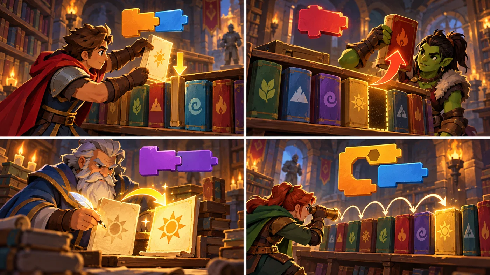
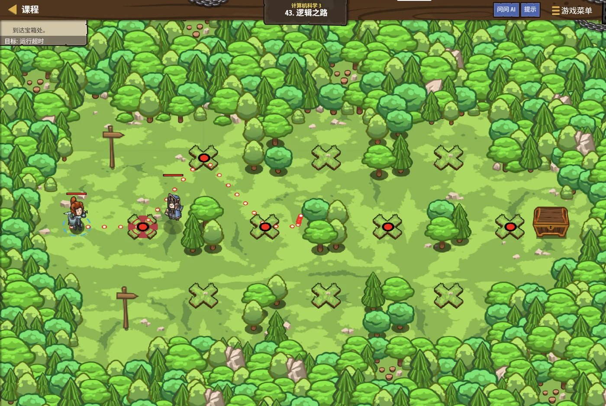

扣哒考级 · GESP 图形化 三级 · 第 3 单元 | 魔法绘本馆 STORYLOOM LIBRARY
书页清单 列表
Lists

贺舒曼
镜中先知 · 你的向导
书架最里层抽出一整排书页，每一页都标着编号：1、2、3、4……
"这一排叫清单。"书签说，"你可以说'第 3 页'，也可以问'一共有几页'。"
你试着抽出第 3 页，它真的自己飘了出来。
"这一排叫清单。"书签说，"你可以说'第 3 页'，也可以问'一共有几页'。"
你试着抽出第 3 页，它真的自己飘了出来。
贺舒曼 · 镜中先知
列表是三级必考的一块。四条要记牢：编号从 1 开始、"加入"是加到末尾、 增删之后后面的编号会变、用"项目数"当循环次数。
0 单元导语与目标
Before We Start
0.1 学习目标
- 理解列表：一排带编号的格子，能一次装下很多数据；
- 掌握列表的增、删、改、查四类操作；
- 会用遍历一项项处理列表里的数据；
- 会求列表的最值、总和与平均值；
- 会说清列表和变量的分工：一个装一个，一个装一串。
0.2 考纲对照
| 考纲知识块 | 考纲要求 | 本单元小节 |
|---|---|---|
| 3 列表 | 列表的创建；数据的增、删、改、查、显示/隐藏、找最值、平均值等 | 1.1～1.2、2.1～2.3、3.1～3.3、4.1 |
| （知识点详述第 3 条） | 掌握列表的概念，掌握对列表的定义、存储、插入、删除等操作 | — |
列表是三级最"好用"的一个数据结构。' '卷子上爱考两类：写一段脚本后列表里剩下什么，' '以及找最值 / 求和该怎么写。
1 列表是什么
What Is a List
1.1 一排带编号的格子
绘本馆的架子上插着一排书页，每页都编了号：1 号、2 号、3 号……' '想找第几页，直接看编号就行。
assets/illustrations/scratch-L3-03-01_page_list.webp
【配图位】一排编号的书页整齐插在书架夹层里，每页标着序号并发出微光，一只猫沿架走过抽出其中一页。（提示词见《GESP配图清单与AI绘图提示词》第四节 3-3）
图 2（SVG）：变量与列表的分工
1.2 新建一个列表
图 3（SVG）：新建列表
打个比方：变量是一个抽屉，列表是一排抽屉柜。
抽屉里只能放一样东西；抽屉柜有编号，你可以说"把第 3 个抽屉里的东西拿出来"。
抽屉里只能放一样东西；抽屉柜有编号，你可以说"把第 3 个抽屉里的东西拿出来"。
2 增、删、改、查
Add, Delete, Update, Query
2.1 加入与删除
重点示例：四类操作里最常用的两块
图形化积木
要点 "加入"默认加到末尾；"删除第 n 项"按编号删；"删除全部项目"一键清空
2.2 替换与取第几项
重点示例：改写与读取
图形化积木
要点 "替换第 n 项"是改；"第 n 项"是查（返回一个值，能塞进别的地方）；"中……的编号"返回某个内容在第几项
2.3 列表的长度
重点示例：列表里现在有几项
图形化积木
要点 返回列表里现有项目的个数，常用来控制循环次数（"有 5 项就重复 5 次"）
一条重要规律：列表的编号同样从 1 开始（和字符串一样）。
而且——加入或删除之后，后面所有项目的编号都会跟着变。插进去一项，原来的第 2 项就变成第 3 项了。
而且——加入或删除之后，后面所有项目的编号都会跟着变。插进去一项，原来的第 2 项就变成第 3 项了。
3 遍历与统计
Traverse and Analyze
3.1 一项一项看过去
重点示例：把列表里每一项都说一遍
图形化积木
读法 用一个"编号"变量从 1 数到最后，每次说第"编号"项，再把编号加 1——这就是遍历
3.2 找最大、找最小
重点示例：找出最厚的那一本
图形化积木
要点 先把"最大值"设成第一项，再一项一项比——遇到更大的就换掉。找最小只要把">"改成"<"
3.3 求和与平均
重点示例：加起来，再除以项数
图形化积木
要点 求和 = "总和清 0 + 一项项加进去"；平均 = 总和 ÷ 项目数
图 4（SVG）：列表的三种统计
4 列表的显示与配合
Display and Teamwork
4.1 显示与隐藏
重点示例：把清单摆到舞台上
图形化积木
要点 显示之后，舞台上会多出一个带勾选框的面板，能实时看到列表里的每一项——调试时特别好用
4.2 列表和变量的分工

assets/illustrations/scratch-L3-03-02_list_ops.webp
【配图位】四格画面演示列表操作——插入新页、删除旧页、修改内容、按顺序查找。（提示词见《GESP配图清单与AI绘图提示词》第四节 3-3）
图 6（SVG）：变量与列表的配合
一个典型搭配：列表负责"装"，变量负责"数"。
遍历列表时，几乎总是"一个编号变量 + 一个重复执行"配着用——这是三级最标准的一段骨架。
遍历列表时，几乎总是"一个编号变量 + 一个重复执行"配着用——这是三级最标准的一段骨架。
5 代码实战
Level Practice
这一关把"顺序"和"逻辑"绑在一起：每一步都要先判断再行动， 就像遍历列表时"每一项都要检查一遍"。
关卡
逻辑之路
进入关卡 →
故事：
绘本馆走廊的地砖上画着一串符号，有的是"与"、有的是"或"、还有"非"。
每踩一块砖，栅栏就换一次状态——你得一步步算清楚现在到底通不通。

assets/stages/py-L3-03-stage1_logic_road.webp
【关卡截图位】请把《逻辑之路》的游戏画面截图放到此处（放入 assets/stages/ 目录，文件名为 py-L3-03-stage1_logic_road.webp）。
思路：把每一块地砖当成列表里的一项：一项一项走过去，每项都判断一次。 判断结果决定栅栏开还是关。
重点示例：一项项走过去，一项项判断
图形化积木
读法 "编号"变量从 1 走到最后，每次取第"编号"项来判断
自己试一试：把"符号清单"换成数字列表、把条件换成"这一项大于 10 吗"，这段骨架立刻变成"统计有多少项大于 10"。遍历的骨架是不变的，换的只是"每项做什么"。
这一关的骨架就是三级最标准的"遍历"写法： 一个编号变量 + 一个重复执行 + 取第 n 项。
为什么不用堆几百块积木？因为列表的长度可能变——加一本、删一本，循环次数就跟着变。用"项目数"当循环次数，脚本永远不用改。
去扣哒世界闯这一关 →
6 常见陷阱
Common Traps
陷阱 1：用"删除"代替"清空"。"删除第 1 项"只删掉一项；要一次清光得用"删除全部项目"。
正确做法：看清题目要"删一项"还是"全清"。
正确做法：看清题目要"删一项"还是"全清"。
陷阱 2：遍历时忘了把编号加 1。循环会转了指定的次数，但每次都取第 1 项。
正确做法："取第 n 项"之后，紧跟一块"将编号增加 1"。
正确做法："取第 n 项"之后，紧跟一块"将编号增加 1"。
陷阱 3：求平均时除以了错的数。应该除以项目数，而不是某个写死的数字。
正确做法：用"……的项目数"当除数，列表一变长一变短都不会算错。
正确做法：用"……的项目数"当除数，列表一变长一变短都不会算错。
陷阱 4：以为"加入"是插在最前面。"将……加入……"是加到末尾的。
正确做法：要插到指定位置，得用"在第 n 项前插入"；注意插完后面的编号都会往后挪一位。
正确做法：要插到指定位置，得用"在第 n 项前插入"；注意插完后面的编号都会往后挪一位。
7 题目练习
Practice
第 1 题改编自 2026 年 6 月 · 图形化编程 三级 判断题 第 6 题，其余为原创练习题。
改编自 2026 年 6 月 · 图形化编程 三 级 · 判断题 第 6 题判断题
在图形化编程中，列表和变量一样，都支持两种作用域：一种是"适用于所有角色"（全局列表），一种是"仅适用于当前角色"（私有列表）。（ ）
（ ）
查看答案与详解
答案：正确（√）。列表和变量在同一个分类里，新建时都会问"适用于所有角色 / 仅适用于当前角色"，作用域的规则完全一样。
为什么要区分：要多个角色共用一份数据（比如公共的名单），就用全局；每个角色各存各的（比如各自的步数），就用局部。
顺带记：克隆体的"私有"是更深一层的设定——同一个角色的每个克隆体各有一份（三级第 4 单元讲过）。
对应小节1.2、4.2 列表的作用域。
为什么要区分：要多个角色共用一份数据（比如公共的名单），就用全局；每个角色各存各的（比如各自的步数），就用局部。
顺带记：克隆体的"私有"是更深一层的设定——同一个角色的每个克隆体各有一份（三级第 4 单元讲过）。
对应小节1.2、4.2 列表的作用域。
原创练习题单选题
书页清单里依次有"星星""月亮""太阳""云"四项。执行"删除清单的第 2 项"之后，清单的第 1 项和第 2 项分别是（ ）。
A.星星、月亮
B.星星、太阳
C.月亮、太阳
D.星星、云
B.星星、太阳
C.月亮、太阳
D.星星、云
查看答案与详解
答案：B。删掉第 2 项"月亮"之后，清单变成"星星、太阳、云"——原来的第 3 项"太阳"补上了第 2 个位置。
这就是列表最要小心的一点：删掉或插入一项后，后面所有项目的编号都会跟着变。
对应小节2.1 加入与删除。
这就是列表最要小心的一点：删掉或插入一项后，后面所有项目的编号都会跟着变。
对应小节2.1 加入与删除。
原创练习题单选题
成绩列表里装着 [95, 88, 76, 92]。要找出里面的最低分，下面哪种思路正确（ ）。
A.直接把第 1 项当成最低分，然后不用再比了
B.先把第 1 项当成最低分，再逐项比较，遇到更小的就替换
C.把四项全部加起来再除以 4
D.用"的话"判断哪一项更长
B.先把第 1 项当成最低分，再逐项比较，遇到更小的就替换
C.把四项全部加起来再除以 4
D.用"的话"判断哪一项更长
查看答案与详解
答案：B。找最值的标准做法是"先假设，再逐个比较、随时替换"：把"最低分"先设成第一项，然后一项项看去，遇到更小的就换掉。
A 错：不比一比，第一项未必是最小的；
C 错：那是求平均分；
D 错：本单元里没有"的话"这块积木，而且比长短也不适用于数字。（这是刻意放进去的干扰项）
对应小节3.2 找最大、找最小。
A 错：不比一比，第一项未必是最小的；
C 错：那是求平均分；
D 错：本单元里没有"的话"这块积木，而且比长短也不适用于数字。（这是刻意放进去的干扰项）
对应小节3.2 找最大、找最小。
原创练习题单选题
一段脚本把列表的"项目数"当作"重复执行"的次数。这样做的好处是（ ）。
A.脚本运行得更快
B.列表变长变短时不用改脚本
C.能自动把列表排序
D.能少占内存
B.列表变长变短时不用改脚本
C.能自动把列表排序
D.能少占内存
查看答案与详解
答案：B。用"项目数"当循环次数，列表里有几项就转几次——加一本、删一本，脚本照样对。
A、D 错：速度和内存不是这里要关心的事；
C 错：重复执行不会自动排序，排序得自己写比较和交换。（排序是四级的内容）
对应小节2.3 列表的长度；3.1 遍历。
A、D 错：速度和内存不是这里要关心的事；
C 错：重复执行不会自动排序，排序得自己写比较和交换。（排序是四级的内容）
对应小节2.3 列表的长度；3.1 遍历。
原创练习题多选题
关于列表，下面说法哪些是正确的（ ）。
A.列表可以一次存放很多项数据
B.列表的编号从 1 开始
C."将……加入……"是把新项加到列表的末尾
D.删掉一项之后，其他项的编号不会变
B.列表的编号从 1 开始
C."将……加入……"是把新项加到列表的末尾
D.删掉一项之后，其他项的编号不会变
查看答案与详解
答案：A、B、C。这三条是列表最基本的规则。
D 错：无论是删除还是插入，后面所有项目的编号都会重新排列——这是列表题最容易错的地方。
对应小节1.1、2.1、2.2 列表的规则。
D 错：无论是删除还是插入，后面所有项目的编号都会重新排列——这是列表题最容易错的地方。
对应小节1.1、2.1、2.2 列表的规则。
原创练习题判断题
在图形化编程中，一个变量只能存放一个值，而一个列表可以存放多项数据。（ ）
查看答案与详解
答案：正确（√）。这正是两者的根本差别：变量 = 一个抽屉，列表 = 一排编号的抽屉柜。
要记"一个分数"用变量；要记"全班几十个分数"就得用列表——变量装不下。
对应小节1.1 一排带编号的格子。
要记"一个分数"用变量；要记"全班几十个分数"就得用列表——变量装不下。
对应小节1.1 一排带编号的格子。
8 本单元小结
Unit Summary
贺舒曼 · 镜中先知
列表是三级最实用的数据结构。记住四类操作：
加入、删除、替换、取第 n 项；再记住三段骨架：
遍历、找最值、求和求平均。最容易错的一点：增删之后，后面所有项的编号都会变。
你在书架上整理出了什么
- 列表：一排带编号的格子，能装一串同类数据（编号从 1 开始）；
- 四类操作：加入（默认加到末尾）、删除（按项或全清）、替换第 n 项、取第 n 项；
- 项目数：列表里现有几项，常用来当循环次数；
- 遍历骨架：编号变量 + 重复执行项目数 + 取第"编号"项 + 编号加 1；
- 统计三件套：找最值（先假设再比较）、求和（清 0 再加）、平均（总和 ÷ 项数）。
下一站：分身图书馆
现在你手里有两样法宝了：能装一串数据的列表， 和之前学过的克隆。下一单元我们把它们合起来用—— 让每个分身都带上属于自己的编号。